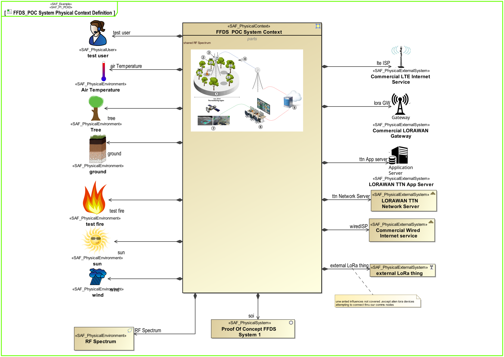

P1_PCXD Physical Context Definition Viewpoint
| Domain | Aspect | Maturity |
|---|---|---|
| Physical | Context & Exchange |

The Physical Context Definition Viewpoint identifies the various contexts the SOI is used in, along with the associated external entities sharing a physical interface with the system. For each context, the applicable environmental conditions shall be defined. The physical context helps identify the interface requirements needed to integrate a system into its environment in a given context.
The Physical Context Definition Viewpoint supports the “Design Definition Process” activities of the INCOSE SYSTEMS ENGINEERING HANDBOOK 2023 [§2.3.5.5] and contributes to the artifacts “System Design Description” and “System Interface Definition”.
A block definition diagram (BDD) depicting the elements available in a specific context. At least one BDD is used per identified context featuring
The following Stereotypes / Model Elements are used in the Viewpoint: